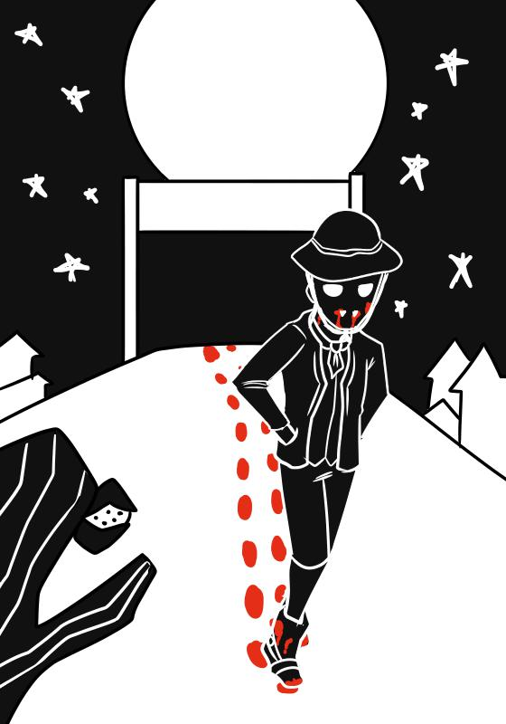

Encourado
O Encourado é um mito do sertão nordestino, descrito como um homem de hábitos noturnos, vestido com roupas de couro e que cheira a sangria. O Encourado se alimenta tanto de seres humanos quanto de animais e, diferente de outros vampiros, não possui fraqueza aparente. Por exemplo, alho, luz do Sol e estaca de madeira não o afetam.
Entretanto, o Encourado só pode entrar na casa das vítimas caso seja convidado, apesar de ser bastante persuasivo. Alguns sinais de sua presença são galinhas parando de botar ovos, cachorros não saindo de casa e urubus sobrevoando o local.